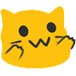

どうもこんばんは。K殻(水月)と申します。
htmlの練習として作ってみました。
SNSなどのリンクや各アカウントのアイコンの引用元などを掲載しています。
今のところ、twitterのアカウントを公開する予定はありません。
そのほかのアカウントは持っていないです。
作り次第公開するかもしれないです。
アイコンは基本的に借り物です。
一部、デフォルトアイコンを転用したり、ゲームのスクショをアイコンにしてたりしてます。著作権的にちょっと危ないけど目をつむってください。
このページのファビコン:ネットから取ってきた:ablobcatreachflip:という絵文字を静止画にしてicoに変換したもの。
←これです。かわいい
すしすきーのアカウントのアイコン： NoCopyrightGirlというサイトから持ってきています。 リンクはこれです。
Misskey.ioのアカウントのアイコン: twitterのにゃむさん(@nneko41)が公開されている画像をお借りしています。 これの右側です。
Misskey.GGのアカウントのアイコン: twitterの𝟜𝟜田さん(@odx_xho)が公開されている画像をお借りしています。 これです。-->
シュリンピア帝国のアカウントのアイコン: twitterのにゃむさん(@nneko41)が公開されている画像をお借りしています。 これの左側です。
Misskey.devのアカウントのアイコン: splatoon3のゲームのスクリーンショットです。普通にアウトなのでそのうち変えます。
submarinのアカウントのアイコン: デフォルトのままです。探すのがめんどくさかったのと、結構好みだったからそのままです。
まっちゃすきーのアカウントのアイコン: submarinのアイコンを持ってきてます。探すのがだるかった。
9ineverseのアカウントのアイコン: twitterのMYUさん(@Myu50743284)が公開されている画像をお借りしています。 これの一枚目です。
discordのアカウントのアイコン: 以前すしすきーでアイコンとして使っていたこのイラストと、 現在すしすきーでアイコンに使っているこのイラストをもとに、 もにさん(@moni)が描いてくださったイラストです。
以上です。質問などはこいつにDNなどで連絡ください。変な人じゃない限りは多分返信します。
Fediverseのアカウントがあればできるはずです。知らんけど
{kind=link}